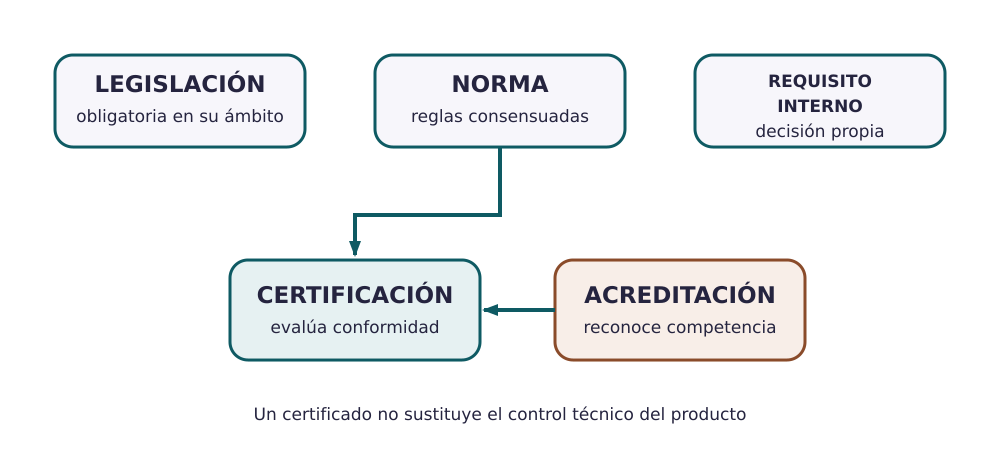
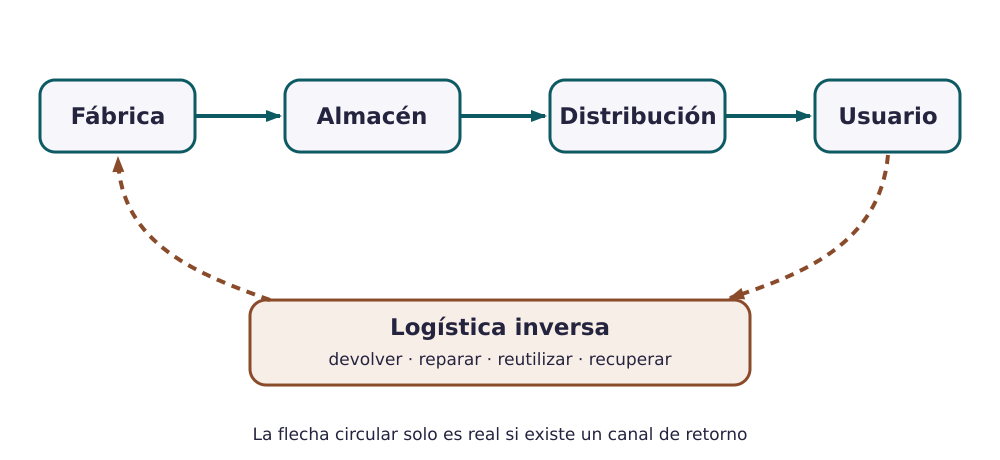

Contenido
Hoy conseguirás: saber qué exigen las leyes y las normas para vender vuestro producto, cómo llega a quien lo usa y cómo puede volver cuando se tira.
Norma y ley no son lo mismo
| Ley o reglamento | Norma técnica | |
|---|---|---|
| ¿Quién la hace? | El Parlamento, el Gobierno o la Unión Europea | Un organismo de normalización (UNE en España, CEN en Europa, ISO en el mundo) con fabricantes, expertos y consumidores |
| ¿Es obligatoria? | Sí, siempre | Es voluntaria, salvo que una ley la haga obligatoria |
| Ejemplo | Reglamento (CE) 1935/2004: lo que toca la bebida no puede pasarle sustancias peligrosas ni cambiar su sabor | UNE-EN 12546-1: qué debe cumplir un termo o una botella de vacío para uso doméstico |
A menudo van juntas: la ley dice qué hay que conseguir (que el casco proteja) y la norma explica cómo se comprueba (qué golpe tiene que aguantar).

AmpliarCertificar y acreditar
- Certificación: una entidad independiente revisa a una empresa o un producto y declara por escrito que cumple unos requisitos.
- Acreditación: un organismo oficial (en España, ENAC) comprueba que esa entidad sabe revisar bien. Se acredita al que revisa, no a la empresa.
- ISO 9000 explica las ideas y el vocabulario de la gestión de la calidad. ISO 9001 dice qué tiene que hacer una empresa para organizar su calidad (responsables, procesos, registros, mejora); a esa organización se le llama sistema de gestión de la calidad. Una empresa puede certificarse en ISO 9001.
La empresa de la botella
La empresa está certificada en ISO 9001: eso demuestra que organiza bien su calidad (tiene controles, registra los fallos, los corrige). No demuestra que cada botella sea perfecta ni sustituye a la ley: las botellas tienen que cumplir igualmente el reglamento de materiales en contacto con alimentos.
Marcado CE
El marcado CE no es un sello de calidad. Lo pone el propio fabricante para declarar que su producto cumple las leyes europeas que le obligan a llevarlo (aparatos eléctricos, cascos de bicicleta, juguetes…). Si ninguna ley lo exige, está prohibido ponerlo. La botella no lo lleva; un hervidor, sí, y es obligatorio.
Del almacén a la persona… y de vuelta

AmpliarEl recorrido de la botella
- Embalaje: caja de cartón individual; 12 cajas por caja grande; 50 cajas grandes (600 botellas) por palé.
- Transporte y almacén: camión hasta el almacén central y furgonetas a las tiendas.
- Venta: tiendas de deporte y tienda en internet; a quien hace deporte y a estudiantes.
- Después de vender: se venden tapones y juntas de recambio, así la botella dura más.
- Vuelta (logística inversa): la etiqueta pide llevar el cuerpo de acero al punto limpio, donde va con la chatarra metálica. Lo que vuelve de verdad es el acero; el tapón y la junta no se recuperan.
¿De verdad vuelve?
Decir «es reciclable» no basta. Para que un material vuelva tiene que existir una forma real de recogerlo, separarlo y tratarlo. Comprobad en el expediente qué sistema de recogida existe para vuestro producto y si coincide con lo que dijisteis en el apartado 3.
Palabras nuevas
- Norma técnica
- Documento acordado que dice cómo hacer o comprobar algo para que todos lo hagan igual. Voluntaria salvo que una ley la exija.
- Marcado CE
- Marca con la que el fabricante declara que su producto cumple las leyes europeas que le afectan.
- Certificación
- Una entidad independiente declara que una empresa o un producto cumple unos requisitos.
- Acreditación
- Un organismo oficial reconoce que una entidad sabe certificar o ensayar.
- Logística inversa
- Organizar el camino de vuelta del producto: devolución, reparación, reutilización o reciclaje.
- Apartado 7: completad la tabla con las leyes y normas de vuestro expediente: si es ley o norma, si es obligatoria y qué le exige a vuestro producto, con vuestras palabras.
- Decid si vuestro producto lleva marcado CE y por qué (mirad el expediente). Explicad en una o dos frases qué demostraría que vuestra empresa estuviera certificada en ISO 9001, y qué no.
- Apartado 8: dibujad el recorrido desde la fábrica hasta quien lo usa y de vuelta, y completad la tabla: embalaje, transporte, dónde y a quién se vende, qué se ofrece después de vender y cómo vuelve.
Cómo sabéis que está bien
- ☐ No confundís ley con norma ni certificación con acreditación.
- ☐ Cada ley o norma dice qué exige a vuestro producto, no qué dice en general.
- ☐ La vuelta del producto usa un sistema de recogida que existe de verdad.
- ☐ El final de vida coincide con el del apartado 3.
Compruébalo
Une cada palabra con lo que significa.
Une cada palabra con lo que significa.
", "showMinimize": false, "itinerary": {"showClue": false, "clueGame": "", "percentageClue": 40, "showCodeAccess": false, "codeAccess": "", "messageCodeAccess": ""}, "cardsGame": [{"url": "", "x": 0, "y": 0, "author": "", "alt": "", "audio": "", "color": "#000000", "backcolor": "#ffffff", "eText": "Norma%20t%C3%A9cnica", "urlBk": "", "xBk": 0, "yBk": 0, "authorBk": "", "altBk": "", "audioBk": "", "colorBk": "#000000", "backcolorBk": "#ffffff", "eTextBk": "Documento%20acordado%20que%20dice%20c%C3%B3mo%20hacer%20o%20comprobar%20algo%3B%20voluntaria%20salvo%20que%20una%20ley%20la%20exija"}, {"url": "", "x": 0, "y": 0, "author": "", "alt": "", "audio": "", "color": "#000000", "backcolor": "#ffffff", "eText": "Ley%20o%20reglamento", "urlBk": "", "xBk": 0, "yBk": 0, "authorBk": "", "altBk": "", "audioBk": "", "colorBk": "#000000", "backcolorBk": "#ffffff", "eTextBk": "Regla%20obligatoria%20aprobada%20por%20un%20parlamento%2C%20un%20gobierno%20o%20la%20Uni%C3%B3n%20Europea"}, {"url": "", "x": 0, "y": 0, "author": "", "alt": "", "audio": "", "color": "#000000", "backcolor": "#ffffff", "eText": "Certificaci%C3%B3n", "urlBk": "", "xBk": 0, "yBk": 0, "authorBk": "", "altBk": "", "audioBk": "", "colorBk": "#000000", "backcolorBk": "#ffffff", "eTextBk": "Una%20entidad%20independiente%20declara%20que%20una%20empresa%20o%20un%20producto%20cumple%20unos%20requisitos"}, {"url": "", "x": 0, "y": 0, "author": "", "alt": "", "audio": "", "color": "#000000", "backcolor": "#ffffff", "eText": "Acreditaci%C3%B3n", "urlBk": "", "xBk": 0, "yBk": 0, "authorBk": "", "altBk": "", "audioBk": "", "colorBk": "#000000", "backcolorBk": "#ffffff", "eTextBk": "Un%20organismo%20oficial%20reconoce%20que%20una%20entidad%20sabe%20certificar%20o%20ensayar"}, {"url": "", "x": 0, "y": 0, "author": "", "alt": "", "audio": "", "color": "#000000", "backcolor": "#ffffff", "eText": "ISO%209000", "urlBk": "", "xBk": 0, "yBk": 0, "authorBk": "", "altBk": "", "audioBk": "", "colorBk": "#000000", "backcolorBk": "#ffffff", "eTextBk": "Explica%20las%20ideas%20y%20el%20vocabulario%20de%20la%20gesti%C3%B3n%20de%20la%20calidad"}, {"url": "", "x": 0, "y": 0, "author": "", "alt": "", "audio": "", "color": "#000000", "backcolor": "#ffffff", "eText": "ISO%209001", "urlBk": "", "xBk": 0, "yBk": 0, "authorBk": "", "altBk": "", "audioBk": "", "colorBk": "#000000", "backcolorBk": "#ffffff", "eTextBk": "Dice%20qu%C3%A9%20tiene%20que%20hacer%20una%20empresa%20para%20organizar%20su%20calidad%3B%20es%20la%20que%20se%20certifica"}], "isScorm": 0, "textButtonScorm": "Guardar la puntuación", "repeatActivity": true, "weighted": 100, "textAfter": "", "version": 2, "percentajeCards": 100, "type": 2, "showSolution": true, "timeShowSolution": 3, "time": 3, "evaluation": false, "evaluationID": "f96bc37c-5aaf-40e4-af65-a544218a46a6", "id": "idevice-1793109593689-eimlb8mve", "msgs": {"msgSubmit": "Enviar", "msgClue": "¡Genial! La pista es:", "msgCodeAccess": "Código de acceso", "msgPlayStart": "Pulsa aquí para jugar", "msgScore": "Puntuación", "msgErrors": "Errores", "msgHits": "Aciertos", "msgMinimize": "Minimizar", "msgMaximize": "Maximizar", "msgFullScreen": "Pantalla Completa", "msgExitFullScreen": "Salir del modo pantalla completa", "msgNoImage": "Pregunta sin imágenes", "msgEndGameScore": "Comience la partida antes de guardar la puntuación.", "msgScoreScorm": "La puntuación no se puede guardar porque esta página no forma parte de un paquete SCORM.", "msgOnlySaveScore": "¡Solo puede guardar la puntuación una vez!", "msgOnlySave": "Solo puede guardar una vez", "msgInformation": "Información", "msgYouScore": "Su puntuación", "msgAuthor": "Autoría", "msgOnlySaveAuto": "Su puntuación se guardará después de cada pregunta. Solo puede jugar una vez.", "msgSaveAuto": "Su puntuación se guardará automáticamente después de cada pregunta.", "msgSeveralScore": "Puede guardar la puntuación tantas veces como quiera", "msgYouLastScore": "La última puntuación guardada es", "msgActityComply": "Ya ha realizado esta actividad.", "msgPlaySeveralTimes": "Puede realizar esta actividad cuantas veces quiera", "msgClose": "Cerrar", "msgAudio": "Audio", "msgNumQuestions": "Número de tarjetas", "msgTryAgain": "Necesitas al menos %s% de respuestas correctas para obtener la información. Inténtalo de nuevo.", "msgEndGameM": "Has completado el juego. Tu puntuación es %s.", "msgUncompletedActivity": "Actividad no completada", "msgSuccessfulActivity": "Actividad superada. Puntuación: %s", "msgUnsuccessfulActivity": "Actividad no superada. Puntuación: %s", "msgTypeGame": "Relaciona", "msgCheck": "Comprobar", "msgRestart": "Reiniciar"}}Compruébalo
¿Llega bien el producto y vuelve de verdad? Decide si cada frase es verdadera o falsa.
00:00: